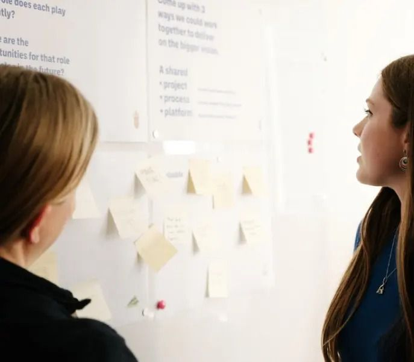
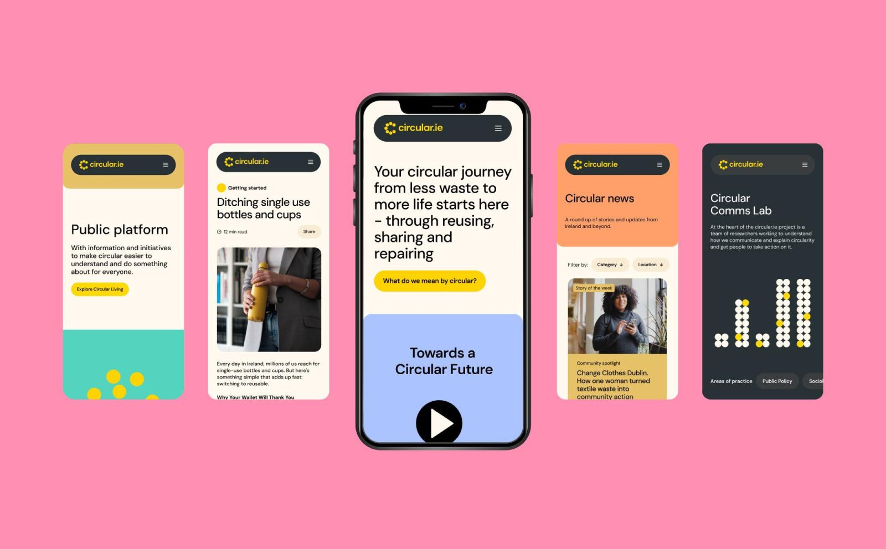

Human Centred Transformation
Wove Group is a strategic design studio in Dublin. We help public bodies, cultural organisations and purpose-led businesses change how they work, with strategy, design and technology woven together.
Featured project · Circular.ie
How do you launch a national campaign for something people have never heard of?
A national campaign built on one idea: show people they’re already doing it.
Who we have done it for
The Abbey TheatreCircular.ieTailte ÉireannCentral Bank of IrelandDublin Dance FestivalResearch IrelandThe JournalScience Gallery International
You’re following our client list. We’ll write to when something is added.
Clients, start to finish
Circular.ie
A ten-year learning programme with The Rediscovery Centre. All four teams, five projects so far, and still growing.
How do you launch a national campaign for something people have never heard of?
The Abbey Theatre
Rethinking how Ireland’s National Theatre meets a changing public, from research to a brand update made for life online.

Rethinking how Ireland’s national theatre interacts in a digital world
Recent projects

Public services
An innovation starter kit
No photos yet
Central Bank of Ireland
Public services
Six months with the Innovation Hub

Public services
Building a future-proofed platform for multiple audiences

Purpose-led business
A new online platform
Themes
Arts and cultureHelping organisations evolve their models to better serve audiences in a changing world.Public servicesWorking with leaders to implement change and develop more sustainable and equitable models.Purpose-led businessWe support founders and businesses dedicated to making people, planet and profit a reality.EducationWe work with students and educators, helping them make learning more accessible, impactful and inclusive.HealthHelping health and care organisations design services around the people who use them.PublishingHelping publishers and newsrooms find models that keep good journalism going.
Wove Mind
Studio update
Toolkits underway for Tailte Éireann’s 1,100 staff
Grace Mc Ginn · Tailte Éireann
No photos yet
Central Bank of Ireland
Studio update
We’re now working with the Central Bank of Ireland
Central Bank of Ireland

Experiment
31 Days of Being More Human
Karl Toomey